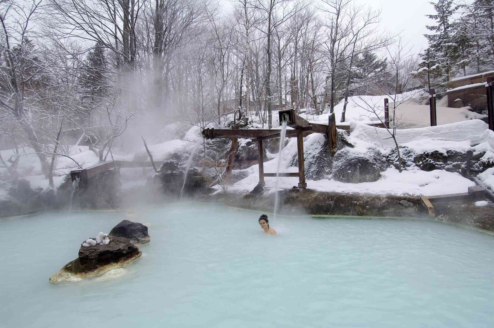

Tokyo
Tokyo es la ciudad capital y la puerta de entrada al Japón. Aquí podrá encontrar tradición, cultura y tecnología por separado y/o combinados. Los parques del Palacio Imperial, en pleno Centro de Tokyo, hacen olvidar toda la conglomeración que lo rodea. Símbolo del país, es un placer poder recorrer su inmensa tranquilidad.
Kyoto

Kyoto está situada a 513 kilómetros de Tokyo. A Dos horas y cuarenta minutos en shinkansen (tren bala). Es la antigua capital de Japón y sede del refinamiento japonés. Esto se aprecia en los templos, santuarios, palacios y en las obras protegidas por el Museo Nacional de Kyoto. Es, sin dudas, una visita imperdible.
Osaka
Osaka, también conocida como la "Venecia del Este" por su red de canales que se ramifican desde el río Yodo. Es un destino que combina un pasado de inmensa riqueza con atracciones ultramodernas. La gente de Osaka es de la más abierta y divertida de Japón.
Nagano
Nagano tiene abundante belleza natural, y es famosa por sus estaciones de esquí y aguas termales. Uno de los lugares turísticos especialmente popular es el Parque de los monos Jigokudani, donde los visitantes pueden ver monos tomando baños en las aguas termales.
Fukuoka

Fukuoka es una ciudad que cuenta con muchas zonas naturales cerca del centro. El mar de Genkai, la sierra de Sefuri (Sefurisanchi), parques rodeados de verde donde podés descansar y la zona de la bahía por donde pasear, entre muchos otros. Fukuoka es una combinación de actitud moderna con tradiciones antiguas.